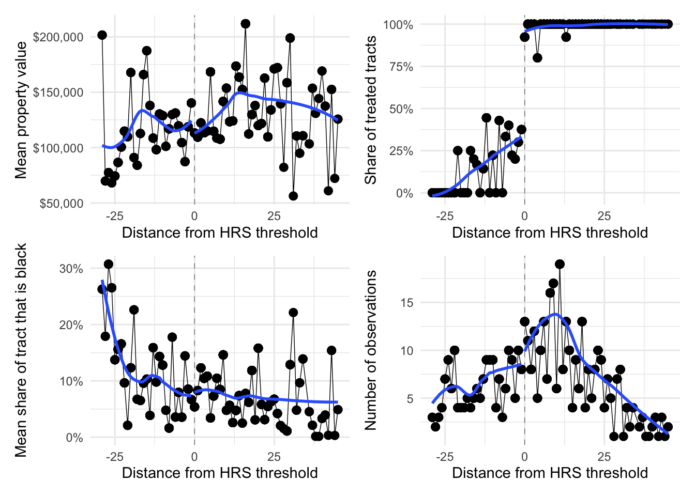

# Load packages
library(pacman)
p_load(tidyverse, patchwork, haven, huxtable, modelsummary, fixest, magrittr, here)
# Load allsites.dta
all_df = read_dta("data/allsites.dta")Problem Set 3
01 Load the allsites.dta data. You can use read_dta() from haven to read Stata data files into R. Now view it using the View() function. You should see nice variable labels. Get to know the data a bit. Describe anything that sticks out to you. glimpse() is a handy function for getting to know a dataset.
Answer: Done.
02 Let’s start simple. Regress the 2000 log median house value for a Census tract on the indicator for whether the tract was listed on the National Priorities List before 2000. Report your results, interpreting the coefficient of interest.
Answer:
# First regression
est2 = feols(lnmdvalhs0 ~ npl2000, data = all_df, vcov = 'hetero')
# Table of results
est2 %>% modelsummary(gof_map = 'nobs', output = 'huxtable')| Model 1 | |
|---|---|
| (Intercept) | 11.720 |
| (0.003) | |
| npl2000 | -0.021 |
| (0.017) | |
| Num.Obs. | 42974 |
In this regression, listing a tract in the NPL is associated with a reduction in median home value of about 2 percent.
03 Does clustering your errors by state affect your standard errors? Do you think it should? Explain.
Hint: The feols() function from fixest allows you to cluster and is quite fast.
Answer:
# First regression
est3 = feols(lnmdvalhs0 ~ npl2000, data = all_df, cluster = ~statefips)
# Table of results
list(
'Heterosk. robust' = est2,
'Cluster robust' = est3
) %>% modelsummary(gof_map = 'nobs', output = 'huxtable')| Heterosk. robust | Cluster robust | |
|---|---|---|
| (Intercept) | 11.720 | 11.720 |
| (0.003) | (0.092) | |
| npl2000 | -0.021 | -0.021 |
| (0.017) | (0.049) | |
| Num.Obs. | 42974 | 42974 |
It seems at least plausible that treatment (NPL listing) and disturbances (to property values) are spatially correlated—perhaps within state. Thus, we might think it’s important to all the disturbances to cluster within state. When we do so, our standard errors more than double.
04 Now run the three regressions described below, sequentially adding more controls to the regressions you ran in 02 and 03. We are still principally interested in the effect of listing on the NPL.
- Control for 1980 housing values
- Also control for economic and demographic variables. (Report which variables you included.)
- Also add state fixed effects.
Briefly interpret your results.
Answer:
# First regression
est4a = feols(
lnmdvalhs0 ~ npl2000 + lnmeanhs8,
cluster = ~statefips,
data = all_df
)
est4b = feols(
lnmdvalhs0 ~ npl2000 + lnmeanhs8 + pop_den8 + shrblk8,
cluster = ~statefips,
data = all_df
)
est4c = feols(
lnmdvalhs0 ~ npl2000 + lnmeanhs8 + pop_den8 + shrblk8 | statefips,
cluster = ~statefips,
data = all_df
)
# Table of results
list(
est2, est3, est4a, est4b, est4c
) %>% modelsummary(gof_map = 'nobs', output = 'huxtable')| Model 1 | Model 2 | Model 3 | Model 4 | Model 5 | |
|---|---|---|---|---|---|
| (Intercept) | 11.720 | 11.720 | 2.404 | 2.403 | |
| (0.003) | (0.092) | (0.444) | (0.515) | ||
| npl2000 | -0.021 | -0.021 | 0.040 | 0.096 | 0.032 |
| (0.017) | (0.049) | (0.025) | (0.019) | (0.022) | |
| lnmeanhs8 | 0.856 | 0.850 | 0.795 | ||
| (0.041) | (0.047) | (0.041) | |||
| pop_den8 | 0.000 | 0.000 | |||
| (0.000) | (0.000) | ||||
| shrblk8 | -0.167 | -0.153 | |||
| (0.061) | (0.060) | ||||
| Num.Obs. | 42974 | 42974 | 42974 | 42974 | 42974 |
Adding additional controls actually flips the sign of the point estimate—though it is only statistically significant in column (4). When we add state fixed effects column (5), the point estimate is again does not statistically significantly differ from zero (though the point estimate is not zero and the confidence interval is relatively large).
05 Under what conditionsl will the coefficients on the NPL indicator (in 02–04) be unbiased for the effect of NPL listing on local property values?
Answer: If, conditional on some set of covariates, a tract’s NPL status in 2000 is “as good as random” (exogenous… uncorrelated with potential outcomes), then the regression that includes those covariates will produce consistent estimates for the average effect of NPL listing on median property values in the tract.
06 Let’s compare the covariates for the treated (NPL listed) and control (non-NPL listed) tracts. First use allcovariates.dta to compare the covariates (the controls you used above) between the tracts listed on the NPL and the tracts that were not listed on the NPL (before 2000).
Does it look like the covariates are balanced across NPL and non-NPL listed tracts?
Notes: The all in the filename means that the file has all of the Census tracts. This comparison should be done via regression. You do not need to cluster your errors (though in real life you would want to).
Answer: Lots of options here. I’m providing five…
# Load the data
all_cov = read_dta("data/allcovariates.dta")
# Example regression
est6a = feols(shrblk8 ~ npl2000, data = all_cov)
est6b = feols(pop_den8 ~ npl2000, data = all_cov)
est6c = feols(avhhin8 ~ npl2000, data = all_cov)
est6d = feols(ownocc8 ~ npl2000, data = all_cov)
est6e = feols(povrat8 ~ npl2000, data = all_cov)
list(
shrblk8 = est6a,
pop_den8 = est6b,
avhhin8 = est6c,
ownocc8 = est6d,
povrat8 = est6e
) %>% modelsummary(gof_map = 'nobs', output = 'huxtable', vcov = 'HC3')| shrblk8 | pop_den8 | avhhin8 | ownocc8 | povrat8 | |
|---|---|---|---|---|---|
| (Intercept) | 0.117 | 5424.074 | 21510.179 | 800.653 | 0.113 |
| (0.001) | (43.605) | (39.636) | (2.135) | (0.000) | |
| npl2000 | -0.025 | -4017.126 | -1170.021 | 107.208 | -0.007 |
| (0.006) | (84.425) | (206.217) | (14.925) | (0.003) | |
| Num.Obs. | 48245 | 48245 | 48245 | 48245 | 48245 |
Moving across the columns, we find statistically significant relationships between NPL listing and many demographics:
- Tracts with a larger share of black residents in 1980 are less likely to be listed.
- Tracts with higher population density (in 1980) are less likely to be listed.
- Tracts with higher income (in 1980) are less likely to be listed.
- Tracts with higher shares of owner-occupied housing (in 1980) are more likely to be listed.
- Tracts with higher rates of poverty (in 1980) are less likely to be listed.
07 Repeat the exercise from 06 with the dataset named sitecovariates.dta. This dataset focuses on tracts that received an HRS test in 1982. Separately compare the balance for treated and control units using the following three definitions of treated and control:
- NPL-listed prior to 2000 vs. not NPL-listed prior to 2000 (what we’ve been doing so far)
- HRS score above 28.5 vs. HRS score below 28.5
- HRS score in [16.5, 28.5) vs. HRS score in [28.5, 40.5]
What are your conclusions from these three comparisons?
Answer: I’m focusing on the tract’s 1980 share of black residents:
# Load the data
site_cov = read_dta("data/sitecovariates.dta")
# Example regression
est7a = feols(
shrblk8 ~ npl2000,
data = site_cov
)
est7b = feols(
shrblk8 ~ I(hrs_82 > 28.5),
data = site_cov
)
est7c = feols(
shrblk8 ~ I(hrs_82 > 28.5),
data = filter(site_cov, between(hrs_82, 16.5, 40.5))
)
list(
est7a, est7b, est7c
) %>% modelsummary(gof_map = 'nobs', output = 'huxtable', vcov = 'HC3')| Model 1 | Model 2 | Model 3 | |
|---|---|---|---|
| (Intercept) | 0.118 | 0.113 | 0.082 |
| (0.019) | (0.017) | (0.022) | |
| npl2000 | -0.046 | ||
| (0.021) | |||
| I(hrs_82 > 28.5) | -0.041 | 0.003 | |
| (0.020) | (0.027) | ||
| Num.Obs. | 487 | 487 | 227 |
Columns (1) and (2) are essentially the same, as NPL2000 is very strongly correlated with the indicator for whether the HRS score exceed 28.5. We still see unbalance in the 1980 share of black residents in columns (1) and (2). However, when we narrow in closer to the threshold, we see much better balance (though the standard error is a bit larger than we might want).
08 Suppose we want to instrument NPL listing with HRS score. What assumptions are necessary?
Answer: We have three requirements: 1. Exogeneity: HRS score is exogenous (seems unlikely—probably want to use the discrete cutoff). 2. Relevance: HRS score actually affects NPL listing (true). 3. Monotonicity: HRS score only moves NPL in one direction (likely true).
09 Imagine we instead want to estimate the effect of NPL listing using a regression discontinuity where HRS score is the running variable and the cutoff is 28.5. What assumptions are necessary?
Answer: We need the potential outcomes to vary smoothly across the cutoff—in other words: we cannot have selection onto the two sides of the cutoff. We also need NPL listing to actually be affected by the HRS cutoff at 28.5.
10 Consider the following three “facts”:
- The EPA states that the 28.5 cutoff was selected because it produced a manageable number of sites.
- None of the individuals involved in identifying the site, testing the level of pollution, or running the 1982 HRS test knew the cutoff/threshold.
- EPA documentation emphasizes that the HRS test is an imperfect scoring measure.
Do these three facts suggest that the requirements for IV and/or RD as valid or invalid? Explain.
Answer: Facts 2 and 3 seem to suggest a valid IV/RD: they suggest sorting did not happen. The first fact may be a little concerning if we think the cutoff was a function of some political decision that created imbalance across the threshold. However, number of firms above/below the threshold seems less concerning.
11 Now using the 2miledata.dta dataset: Estimate the effect of NPL listing on log median house value (in 2000) using HRS score as an instrument. Estimate the three standard regressions of 2SLS (first stage, reduced form, second state) and briefly discuss them. Cluster your errors at the state level.
Make sure that your second-stage estimate is equal to the ratio of your reduced form and the first stage.
Answer:
# Load data
main_df = read_dta("data/2miledata.dta")
# First stage
est11_1 = feols(npl2000 ~ hrs_82, data = main_df)
# Reduced form
est11_2 = feols(log(mdvalhs0) ~ hrs_82, data = main_df)
# Actual 2SLS estimate
est11_3 = feols(
log(mdvalhs0) ~ 1 | npl2000 ~ hrs_82,
data = main_df
)
list(
'First stage' = est11_1,
'Reduced form' = est11_2,
'2SLS' = est11_3
) %>% modelsummary(gof_map = 'nobs', output = 'huxtable', vcov = ~statefips)| First stage | Reduced form | 2SLS | |
|---|---|---|---|
| (Intercept) | 0.004 | 11.430 | 11.429 |
| (0.039) | (0.108) | (0.106) | |
| hrs_82 | 0.020 | 0.006 | |
| (0.001) | (0.002) | ||
| fit_npl2000 | 0.309 | ||
| (0.084) | |||
| Num.Obs. | 483 | 483 | 483 |
12 Does adding state fixed effects to the 2SLS estimates in 11 change your estimates? Use the first-stage and reduced-form estimates to explain what is happening. Do you think adding additional controls could be important?
Answer: Controls are likely important, as we are still not actually using the discontinuity.
# First stage
est12_1 = feols(
npl2000 ~ hrs_82 | statefips,
data = main_df
)
# Reduced form
est12_2 = feols(
log(mdvalhs0) ~ hrs_82 | statefips,
data = main_df
)
# Actual 2SLS estimate
est12_3 = feols(
log(mdvalhs0) ~ 1 | statefips | npl2000 ~ hrs_82,
data = main_df
)
list(
'First stage' = est12_1,
'Reduced form' = est12_2,
'2SLS' = est12_3
) %>% modelsummary(gof_map = 'nobs', output = 'huxtable', vcov = ~statefips)| First stage | Reduced form | 2SLS | |
|---|---|---|---|
| hrs_82 | 0.020 | 0.003 | |
| (0.001) | (0.001) | ||
| fit_npl2000 | 0.165 | ||
| (0.072) | |||
| Num.Obs. | 483 | 483 | 483 |
Adding state fixed effects cuts the reduced-form estimate in half, which halves our treatment-effect estimate.
13 Repeat the 2SLS analysis from 11 but change your instrument to an indicator for whether HRS score is above 28.5 (no fixed effects). How do you results change? Briefly discuss.
# First stage
est13_1 = feols(
npl2000 ~ I(hrs_82 > 28.5),
data = main_df
)
# Reduced form
est13_2 = feols(
log(mdvalhs0) ~ I(hrs_82 > 28.5),
data = main_df
)
# Actual 2SLS estimate
est13_3 = feols(
log(mdvalhs0) ~ 1 | npl2000 ~ I(hrs_82 > 28.5),
data = main_df
)
list(
'First stage' = est13_1,
'Reduced form' = est13_2,
'2SLS' = est13_3
) %>% modelsummary(gof_map = 'nobs', output = 'huxtable', vcov = ~statefips)| First stage | Reduced form | 2SLS | |
|---|---|---|---|
| (Intercept) | 0.164 | 11.528 | 11.493 |
| (0.032) | (0.091) | (0.098) | |
| I(hrs_82 > 28.5) | 0.826 | 0.179 | |
| (0.033) | (0.062) | ||
| fit_npl2000 | 0.216 | ||
| (0.073) | |||
| Num.Obs. | 483 | 483 | 483 |
The first stage is much stronger (it’s a fuzzy RD, but it’s quite strong), and the reduced-form effect is also much larger. These two effects balance out to a modest increase in the treatment-effect estimate.
14 Based upon your first stage estimates in 13: If we want to estimate the effect using a regression discontinuity, will it be a sharp or fuzzy RD? Briefly explain your answer.
Answer: It is a fuzzy RD because treatment status (NPL listing) is not perfectly predicted by being above/below the threshold.
15 Create the standard plots of a regression discontinuity (remember to bin your observations using the running variable, HRS score):
- The outcome variable vs. the running variable
- The treatment variable vs. the running variable
- Covariates vs. the running variable
- Bin counts vs. the running variable
# Create plotting dataset
plot_df = main_df %>%
mutate(run = hrs_82 - 28.5, run_bin = run %/% 1 * 1) %>%
group_by(run_bin) %>%
transmute(
n = n(),
mean_y = mean((mdvalhs0), na.rm = T),
mean_trt = mean(npl2000),
mean_share_black = mean(shrblk8_nbr)
) %>% ungroup()
# Outcome
p1 = ggplot(data = plot_df, aes(x = run_bin, y = mean_y, group = run_bin < 0)) +
geom_vline(xintercept = 0, linetype = "dashed", size = 0.2, color = "grey40") +
geom_line(size = 0.25) +
geom_point(size = 2.5) +
geom_smooth(se = F, method = loess) +
scale_y_continuous("Mean property value", labels = scales::dollar) +
scale_x_continuous("Distance from HRS threshold") +
theme_minimal()
# Treatment
p2 = ggplot(data = plot_df, aes(x = run_bin, y = mean_trt, group = run_bin < 0)) +
geom_vline(xintercept = 0, linetype = "dashed", size = 0.2, color = "grey40") +
geom_line(size = 0.25) +
geom_point(size = 2.5) +
geom_smooth(se = F, method = loess) +
scale_y_continuous("Share of treated tracts", labels = scales::percent) +
scale_x_continuous("Distance from HRS threshold") +
theme_minimal()
# Covariates
p3 = ggplot(data = plot_df, aes(x = run_bin, y = mean_share_black, group = run_bin < 0)) +
geom_vline(xintercept = 0, linetype = "dashed", size = 0.2, color = "grey40") +
geom_line(size = 0.25) +
geom_point(size = 2.5) +
geom_smooth(se = F, method = loess) +
scale_y_continuous("Mean share of tract that is black", labels = scales::percent) +
scale_x_continuous("Distance from HRS threshold") +
theme_minimal()
# Counts
p4 = ggplot(data = plot_df, aes(x = run_bin, y = n, group = run_bin < 0)) +
geom_vline(xintercept = 0, linetype = "dashed", size = 0.2, color = "grey40") +
geom_line(size = 0.25) +
geom_point(size = 2.5) +
geom_smooth(se = F, method = loess) +
scale_y_continuous("Number of observations") +
scale_x_continuous("Distance from HRS threshold") +
theme_minimal()
# Plot
p1 + p2 + p3 + p4`geom_smooth()` using formula 'y ~ x'
`geom_smooth()` using formula 'y ~ x'
`geom_smooth()` using formula 'y ~ x'
`geom_smooth()` using formula 'y ~ x'
16 Based upon your figures in 15, does this look like a plausible regression discontinuity? Use the figures to explain your answer.
Answer:
- Treatment looks good for a fuzzy RD: We see a big, discontinuous jump across the threshold.
- We do not see a corresponding jump in property values (which is more about treatment effects than validity of the RD).
- The share of the census tract that is black seems to vary fairly smoothly across the threshold.
- The number of observations in the bins jumps a bit at the threshold, which may warrant some concern.
17 Time for RD estimates! Limit your analysis to HRS scores between [16.5, 40.5] and re-estimate the 2SLS from 13. Add controls if you think they’re necessary. Report your results.
Answer:
# Fuzzy RD estimate
est17_3a = feols(
log(mdvalhs0) ~ 1 | 0 | npl2000 ~ I(hrs_82 > 28.5),
data = main_df %>% filter(hrs_82 %>% between(16.5, 40.5))
)
# Add fixed effects
est17_3b = feols(
log(mdvalhs0) ~ 1 | statefips | npl2000 ~ i(hrs_82 > 28.5),
data = main_df %>% filter(hrs_82 %>% between(16.5, 40.5))
)
list(
'Fuzzy RD' = est17_3a,
'With FEs' = est17_3b
) %>% modelsummary(gof_map = 'nobs', output = 'huxtable', vcov = ~statefips)| Fuzzy RD | With FEs | |
|---|---|---|
| (Intercept) | 11.555 | |
| (0.092) | ||
| fit_npl2000 | 0.056 | 0.092 |
| (0.087) | (0.073) | |
| Num.Obs. | 226 | 226 |
Without state fixed effects, we estimate a 5.6% increase in property values that does not differ statistically from zero. With state fixed effects, we estimate an increase of approximately 9.2%, but again, this difference does not differ statistically from zero. The standard errors on these point estimates are quite large: the confidence interval for the second estimate covers a 6.6% decrease to a 25% increase.
18 Which of your estimates do you find most credible? Explain.
Answer: Based upon the institutional information, it seems like the fuzzy RD likely provides the best apples-to-apple comparison: folks who barely missed out on getting listed to folks who were listed. That said, this design still has some shortcomings: (1) the bin-count graph does not look great, (2) it seems pretty underpowered with only 226 observations in our “window” (at least: large standard errors), and (3) the point estimate is a hyper-local LATE.